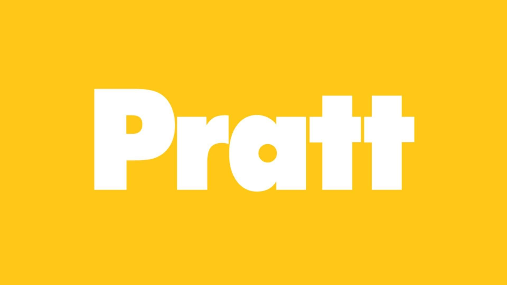
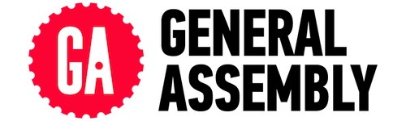

Objective
Using all the potential of my skills as a Front-End WebDeveloper, Graphic Designer and Social Media Manager.
Experience
Currently attending the front-end development program at General Assembly. I will be learning coding languages such as CSS, HTML and Javascript. With my prior experience working with Wordpress and Squarespace I hope to acquire the skills to develop more user friendly and responsive websites.
Mi Dinero Mi Futuro | Social Media Manager
Fintech startup focusing on Latina Financial Empowerment, driving customer engagement, adapting content to each media network, research of industry trends and seeking networking opportunities with current and potential users, research media opportunities for wider content coverage, test, implement and analyze campaign outcomes and tailor timely responses to attract more followers, connect users and stimulate discussions amongst users using Twitter Chats, polls and questions, generate leads through targeted content and nurture users to become paying customers.
SteelBird Tech & Design | Free-lance Graphic Designer and Illustrator
Brand development and design of print materials, logos, editorial illustrations, brochures, postcards, annual reports, flyers and digital prints; business promotion and outreach; WordPress and Squarespace website design, social media integration and management.
Canalero Paddle Sports | Owner & Founder 2013 - present
Online Marketplace for Paddling Sports in Panama
Offers up to date information on upcoming events, equipment reviews, rental locations and the latest news on paddling sports in Panama and Panamanian Paddlers competing around the world.
Sylvia Rivera Law Project | Director of Community Outreach | Prisoner Project Coordinator
Advise on intake procedures; evaluate direct services program; conduct intakes for both English and Spanish speaking callers; participate in NY Coalition for Immigrants' Rights to Drivers' Licenses as Chair of the Gender Identity Working Group; spokesperson and representative for organization; presented workshops at national conferences; participated in governance and oversight of organization as part of collective structure; Provide support and assistance to community organizing projects; case management, coordinate and special event planning; public outreach and marketing, created and designed outreach materials, managed volunteers, planned and conduct trainings, workshops and presentations, Spanish translator and interpreter for legal clinic.
Education
 Ohio State University - BA Sociology, 1999
Ohio State University - BA Sociology, 1999
 Pratt Institute - AOS Illustration, 2009
 General Assembly - Front-End Web Development, 2015
Groups & Activities
Latino Startup Alliance - East Coast Chapter Volunteer/Social Media and Event Organizer
Latinas Who Tech
New York Outrigger Club Member & Volunteer
MavenYouth LGBT Youth Tech Summer Camp - Volunteer